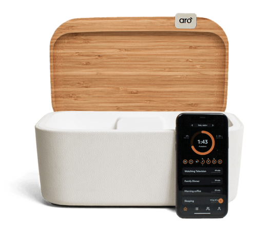
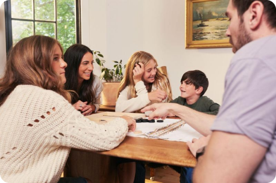

Aro turns screen time into family time
Aro helps families put down their phones to connect, relax, and recharge
Introducing Aro
Aro is the first in-home digital wellbeing solution designed for families. The Aro platform ensures you don’t miss out on what’s most important by making it easy for everyone to put down their phones and be fully present
How it works
Spend quality time together
We only get so much time with our kids--18 years goes by quickly. Aro helps both parents and kids put down their phones when it’s family time so you don’t look back wishing you spent more time with your family and less time on your phone.
75%
of the time we spend with our kids in our lifetime will be spent by age 12.
Source: 1000 Hours Outside
Teach your kids healthy habits
Giving your kids a smartphone is a stressful decision. Aro helps them develop healthy relationships with their phones, allows you to model good habits, and gives you peace of mind knowing they have the tools to be safe and successful.
83%
of parents believe it's important to have time as a family without screens present.
Source: The Genius of Play
Reconnect with your partner
We’ve all been there. It’s the end of the day, the kids are finally asleep, and what happens? We sit down on the couch and pick up our phones rather than connect with the person right next to us. Putting your phone in Aro shows your partner you are truly present with them.
79%
of married couples admit technology distracts them from connecting with each other.
Source: Lasting App

Take some well-deserved "me time"
Sometimes we need to quiet the outside voices a little. Aro is your reminder that it’s OK to take some time for yourself. That could be reading a book, reflecting on the day, or even just getting a good night's sleep. You deserve it.
91%
of adults keep their phones within an arm’s reach all day.
Source: Forbes